<!DOCTYPE HTML>
<html>
<head>
  <meta charset="utf-8">
  
  <title>关于请求被挂起页面加载缓慢问题的追查（01/13更） | 刘哇勇的部落格</title>
  <meta name="author" content="Wayou Liu">
  
  <meta name="description" content="本文前戏较多，务实的同学可以直接跳到结论。">
  
  
  <meta name="viewport" content="width=device-width,initial-scale=1,maximum-scale=1">

  <meta property="og:title" content="关于请求被挂起页面加载缓慢问题的追查（01/13更）">
  <meta property="og:site_name" content="刘哇勇的部落格">

  
  
		<!-- favicon -->
		<link rel="apple-touch-icon" sizes="57x57" href="/apple-touch-icon-57x57.png">
		<link rel="apple-touch-icon" sizes="60x60" href="/apple-touch-icon-60x60.png">
		<link rel="apple-touch-icon" sizes="72x72" href="/apple-touch-icon-72x72.png">
		<link rel="apple-touch-icon" sizes="76x76" href="/apple-touch-icon-76x76.png">
		<link rel="apple-touch-icon" sizes="114x114" href="/apple-touch-icon-114x114.png">
		<link rel="apple-touch-icon" sizes="120x120" href="/apple-touch-icon-120x120.png">
		<link rel="apple-touch-icon" sizes="144x144" href="/apple-touch-icon-144x144.png">
		<link rel="apple-touch-icon" sizes="152x152" href="/apple-touch-icon-152x152.png">
		<link rel="icon" type="image/png" href="/favicon-32x32.png" sizes="32x32">
		<link rel="icon" type="image/png" href="/favicon-96x96.png" sizes="96x96">
		<link rel="icon" type="image/png" href="/favicon-16x16.png" sizes="16x16">
		<link rel="manifest" href="/manifest.json">
		<meta name="msapplication-TileColor" content="#009688">
		<meta name="msapplication-TileImage" content="/mstile-144x144.png">
		<meta name="theme-color" content="#009688">
		<!-- favicon end -->
    <!-- <link href="/favicon.ico" rel="icon"> -->
  

  <!-- toc -->
  <link rel="stylesheet" href="/libs/tocify/jquery.tocify.css" media="screen" type="text/css">

  <!-- <link rel="stylesheet" href="/libs/bs/css/bootstrap.min.css" media="screen" type="text/css"> -->
  <link rel="stylesheet" href="//apps.bdimg.com/libs/bootstrap/3.3.4/css/bootstrap.min.css" media="screen" type="text/css">

  <!-- material design -->
	<!-- <link rel="stylesheet" href="/libs/bs-material/css/ripples.min.css" media="screen" type="text/css"> -->
  <link rel="stylesheet" href="//apps.bdimg.com/libs/bootstrap-material/0.3.0/css/ripples.min.css" media="screen" type="text/css">
  <!-- <link rel="stylesheet" href="/libs/bs-material/css/material.min.css" media="screen" type="text/css"> -->
	<link rel="stylesheet" href="//apps.bdimg.com/libs/bootstrap-material/0.3.0/css/material.min.css" media="screen" type="text/css">

  <link rel="stylesheet" href="/css/highlight.light.css" media="screen" type="text/css">

  <link rel="stylesheet" href="/css/style.css" media="screen" type="text/css">

  <!-- 百度统计 -->
  
  <script>
  var _hmt = _hmt || [];
  (function() {
    var hm = document.createElement("script");
    hm.src = "//hm.baidu.com/hm.js?392796d51567e848aebf813b65cb8656";
    var s = document.getElementsByTagName("script")[0];
    s.parentNode.insertBefore(hm, s);
  })();
  </script>
  

  <!-- 谷歌统计 -->
  

  <script src="//apps.bdimg.com/libs/jquery/2.0.3/jquery.min.js"></script>
	<script>window.jQuery || document.write('<script src="/libs/jquery-2.0.3.min.js" type="text/javascript"><\/script>')</script>

</head></html>
 	<body>
	  <nav class="navbar navbar-default">
    <div class="container">
        <div class="navbar-header">
            <button type="button" class="navbar-toggle collapsed" data-toggle="collapse" data-target="#navbar" aria-expanded="false" aria-controls="navbar">
            <span class="sr-only">菜单</span>
            <span class="icon-bar"></span>
            <span class="icon-bar"></span>
            <span class="icon-bar"></span>
            </button>
            <a class="navbar-brand" href="/">刘哇勇的部落格</a>
        </div>
        <div id="navbar" class="collapse navbar-collapse">
            <ul class="nav navbar-nav navbar-right">
                
                <li>
                    <a href="/" title="">
                    <i class="fa fa-home"></i>首页
                    </a>
                </li>
                
                <li>
                    <a href="/archives" title="">
                    <i class="fa fa-list"></i>存档
                    </a>
                </li>
                
                <li>
                    <a href="/about" title="">
                    <i class="fa fa-info-circle"></i>关于
                    </a>
                </li>
                
                <li>
                    <a href="/atom.xml" title="这是一个订阅源">
                    <i class="fa fa-rss"></i>RSS
                    </a>
                </li>
                
            </ul>
        </div>
    </div>
</nav>
	  <div class="container">
	    <div class="row">
	<div class="col-md-9">

		<div class="content">
			<!-- index -->
		   

			  		<h1>关于请求被挂起页面加载缓慢问题的追查（01/13更）</h1>
					
					<div>
						<span class="post-time">2014-12-31 20:38:22</span>
					</div>	
					

					<p>本文前戏较多，务实的同学可以直接跳到结论。</p>
<a id="more"></a>
<p>由「<a href="http://movie.douban.com/subject/4876722/" target="_blank" rel="external">钢的琴</a>」网友脑洞大开延伸出了吉的他二的胡琵的琶，以及后来许嵩的「<a href="http://music.douban.com/subject/6033105/" target="_blank" rel="external">苏格拉没有底</a>」，是否可以再拓展一下，得到哥本不爱吃哈根，哈根爱达斯等剧情乱入的关系。</p>
<p>上面跟本文要讨论的主题有什么关系？</p>
<p>没关系。</p>
<h2 id="u7F18_u8D77"><a href="#u7F18_u8D77" class="headerlink" title="缘起"></a>缘起</h2><p>有用户反馈内部MIS系统慢，页面加载耗时长。前端同学们开组会提及此事，如何解决慢的问题。</p>
<p>最致命的是：偶发！你不能准确知道它抽风的时间点，无法在想要追查问题的时候必现它。<br>这只是一方面，另外，慢的可能实在太多了，那么问题来了，是前端导致的还是后端的问题？</p>
<p>对慢的定义也有待商榷，多久算慢？如果这个页面加载大量数据耗时增加那我认为这是正常的。但这个时限超过了一个合理的自然值，就变得不那么正常了，比如四五十秒，一分多钟。</p>
<p>最奇葩的是，如此久的耗时居然不会报超时错误，而是拿到正确返回后将页面呈现了出来！</p>
<h2 id="u80FD_u7684_u539F_u56E0"><a href="#u80FD_u7684_u539F_u56E0" class="headerlink" title="能的原因"></a>能的原因</h2><h3 id="u521D_u6B65_u731C_u6D4B"><a href="#u521D_u6B65_u731C_u6D4B" class="headerlink" title="初步猜测"></a>初步猜测</h3><p>初步的猜测可能是后端迟迟未返回造成浏览器处于等待状态。这个猜测是很合乎逻辑的，至少能够很合理地解释Chrome Dev Tool 网络面板中我们看到的状态<code>pending</code>。<br></p>
<p>但我们不能停留在猜测阶段，要用事实说话，数据才不会骗人。这也正是本文将要展开的。</p>
<p>下面是另外一些被提出来的可能性。</p>
<h3 id="Angular"><a href="#Angular" class="headerlink" title="Angular"></a>Angular</h3><p>Angular首当其冲。为什么，因为这个问题出现在后台MIS系统中，且这些系统多用Angular开发。</p>
<p>Angular ：怪我咯。</p>
<p>因为问题多出现在基于Angular的MIS系统中，并且Angular的性能一直是被诟病的，所以听到不少的声音将矛头指向Angular。这似乎没什么好庇护的。Angular在整个项目中的前端部分扮演了很重的角色。树大招风，理所当然。</p>
<p>这让我想起初次接触到这个问题时，那是在七月份，芙蓉的爱马仕平台用户反馈了慢的问题，报到前端，顺便看了下，一看<code>Pending</code>状态，觉得是后端未返回。只是情深缘浅当时也没有深入，同时洪堂大神负责去追查了。当时那个系统，很负责地说，没有用Angular。</p>
<p>所以这里可以为Angular正身，将其排除。</p>
<h3 id="u5185_u90E8_u5C01_u88C5_u7684commonResource_u5E93"><a href="#u5185_u90E8_u5C01_u88C5_u7684commonResource_u5E93" class="headerlink" title="内部封装的commonResource库"></a>内部封装的<code>commonResource</code>库</h3><p>内部对Angular原生的<code>resource</code>进行了封装，做了些数据的转换处理。既然上面Angular都被正身了，那么这里的怀疑也是站不住脚的。</p>
<h3 id="Chrome_u63D2_u4EF6"><a href="#Chrome_u63D2_u4EF6" class="headerlink" title="Chrome插件"></a>Chrome插件</h3><p>经查，网上好多呼声有说是Adblock等与网络有关的Chrome插件。可我不使用它已经很多年，那玩意儿太重，后来找到了算法更高级体量更轻便的<a href="https://chrome.google.com/webstore/detail/%C2%B5block/cjpalhdlnbpafiamejdnhcphjbkeiagm?hl=en" target="_blank" rel="external">µBlock</a>。关键是后者也在我使用一段时间后放弃了，因为个人觉悟提高了，免费内容是需要广告支撑的，如果你不希望付费变成强制的话。所以现在一直是处于未开这类插件的状态。那么在未开广告屏蔽插件的情况下重现了问题，可以排除这类插件的影响了。</p>
<p>关于插件，此刻我的Chrome里唯一还会接管Chrome网络的便是代理插件<a href="https://chrome.google.com/webstore/detail/proxy-switchysharp/dpplabbmogkhghncfbfdeeokoefdjegm?hl=en" target="_blank" rel="external">SwitchSharp</a>, 升级之后这货叫<a href="https://chrome.google.com/webstore/detail/proxy-switchyomega/padekgcemlokbadohgkifijomclgjgif" target="_blank" rel="external">Switchy哦卖喝</a>（与时俱进的我当然使用的是后者）。</p>
<h3 id="Chrome_u72EC_u5BB6_uFF1F"><a href="#Chrome_u72EC_u5BB6_uFF1F" class="headerlink" title="Chrome独家？"></a>Chrome独家？</h3><p>因为内部MIS只兼容了Chrome开发，所以不会有在除了Chrome之外的浏览器上使用的场景，并且其他浏览器上面追查问题也是很痛苦的事情。这里仅在火狐里进行了少量尝试，未复现。同时接到反馈，Safari里也未复现。但也不能肯定就只有Chrome存在问题。似乎这个对于问题的解决还不那么重要，所以先不管。</p>
<h3 id="u6740_u6BD2_u8F6F_u4EF6"><a href="#u6740_u6BD2_u8F6F_u4EF6" class="headerlink" title="杀毒软件"></a>杀毒软件</h3><p>后面会看到，在追查错误号<code>ERR_CONNECTION_RESET</code>时引出了杀毒软件可能会导致Chrome工作不正常的情况，但这个可能也在稍后被排除人。</p>
<p>并且，我厂使用Mac的同学并没有安装杀软，依然是可以复现的。</p>
<h2 id="u91CD_u73B0"><a href="#u91CD_u73B0" class="headerlink" title="重现"></a>重现</h2><p>第一件事情便是重现。虽然是偶发，为了尽可能保存现场，还是想要手动将它刷出来。天不灭我，经过良久尝试，该问题被复现。于是各种截图，保存请求数据。这个时候还没有开启<code>chrome://net-internals/#events</code>页面来捕获事件日志。</p>
<p>为以后引用方便，这里留下版本信息：</p>
<blockquote>
<p>OS： Windows 7 Ultimate<br>Chrome：Version 39.0.2171.95 m</p>
</blockquote>
<p>这是请求<code>Pending</code>时的请求信息：<br>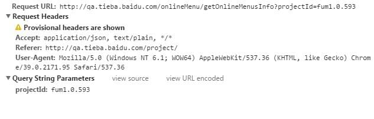</p>
<p>这是请求成功返回后：<br>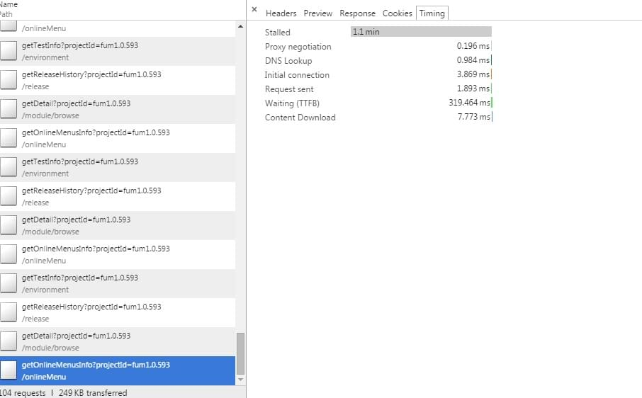</p>
<p>可以看到<code>Stalled</code>了1分多钟。神奇的是竟然不报超时错误而是成功返回了。</p>
<p>同时保存了请求头，响应头，还将本次问题请求保存成了CURL等。现场已经留下，感觉Bug不会存活太久了。</p>
<p>接下来就是对比正常请求跟这次异常请求的不同，一轮比较下来，未发现多少异常。</p>
<h3 id="u5E38_u6001_u4E0E_u53D8_u6001_u7684_u5BF9_u6BD4"><a href="#u5E38_u6001_u4E0E_u53D8_u6001_u7684_u5BF9_u6BD4" class="headerlink" title="常态与变态的对比"></a>常态与变态的对比</h3><p>请求头对比：</p>
<p>请求头的对比已丢失，但除了时间外，其余无差别。</p>
<p>响应头对比：</p>
<p>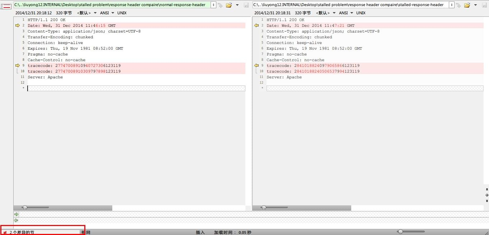</p>
<p>返回结果对比：</p>
<p>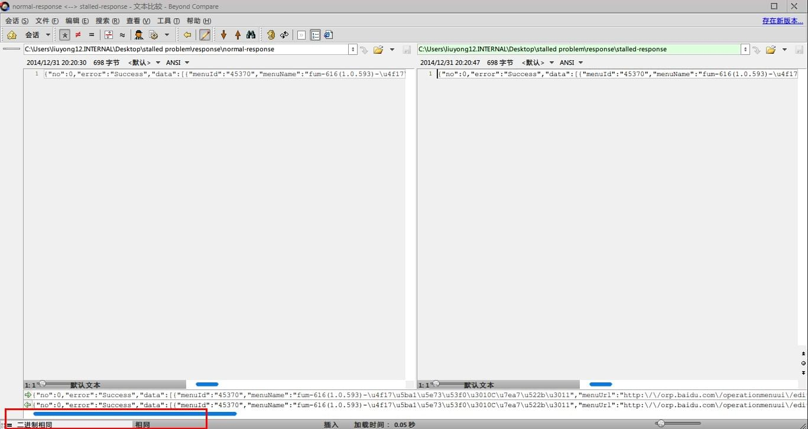</p>
<p>上面的对比意义不大，但还是要做的，万一发现有价值的情报了呢。</p>
<h2 id="u4E00_u6B21_u5931_u8D25_u7684_u5C1D_u8BD5"><a href="#u4E00_u6B21_u5931_u8D25_u7684_u5C1D_u8BD5" class="headerlink" title="一次失败的尝试"></a>一次失败的尝试</h2><p>解决问题时，习惯性地看有没有人已经碰过到类似问题，这样做的好处很明显：<br>如果有，站在巨人的肩上轻松地牛逼着；<br>如果没有，这是个机会。</p>
<p>于是信心满满地出发了，因为根据一条互联网准则，70%的问题已经有人解决过了，那些没有被解决的要么是现有技术达不到，要么是未被人发现。所以能够搜索出问题答案的概率还是蛮大的。</p>
<p>经过旷日持久的搜索，有价值的参考寥寥无几。可能是问题本身太过奇葩，遇到的人太少；也有可能问题过于晦涩，无法表述；抑或我搜索的关键词不够精准。<br>倒也不是说一个都没找到，但一般涉及网络日志的情况就无人问津了，无人问津了！</p>
<p>比如<a href="http://stackoverflow.com/questions/14821725/ajax-request-over-https-hangs-for-40-seconds-in-chrome-only" target="_blank" rel="external">这个</a>，一年多前被人问的，现在还没有一个回答。</p>
<p>还比如这个</p>
<blockquote>
<p><a href="http://stackoverflow.com/questions/27513994/chrome-stalls-when-making-multiple-requests-to-same-resource" target="_blank" rel="external">Chrome stalls when making multiple requests to same resource?</a></p>
</blockquote>
<p>是后来作为参考的，也是无人问津了……</p>
<p>甚至自己也去问了<a href="http://stackoverflow.com/questions/27740692/request-stalled-for-a-long-time-occasionally-in-chrome" target="_blank" rel="external">一个</a>，依然无人问津了……</p>
<h3 id="u795E_u79D8_u7684CACHE_LOCK"><a href="#u795E_u79D8_u7684CACHE_LOCK" class="headerlink" title="神秘的CACHE LOCK"></a>神秘的CACHE LOCK</h3><p>上面提到，Stackoverflow上找到<a href="http://stackoverflow.com/questions/14821725/ajax-request-over-https-hangs-for-40-seconds-in-chrome-only" target="_blank" rel="external">一个问题</a>，跟现在需要解决一有些类似点：</p>
<ul>
<li>偶发，并不是必然出现的。这里我们的问题也是偶发，很难复现，需要反复刷。</li>
<li>也是请求被<code>Pending</code>了很久，从请求的时间线来看，体现在<code>Stalled</code>上。</li>
</ul>
<p>这一刻，有一种感觉大概是这样的：</p>
<blockquote>
<p>伟大的意大利的左后卫！他继承了意大利的光荣的传统。法切蒂、卡布里尼、马尔蒂尼在这一刻灵魂附体！格罗索一个人他代表了意大利足球悠久的历史和传统，在这一刻他不是一个人在战斗，他不是一个人！</p>
</blockquote>
<p>突然看到了希望。该提问到没有给出什么建设性的意见，但它后面的追加编辑却给出了答案。过程是查看Chrome的网络日志，在事件里面发现有一个超时错误：</p>
<blockquote>
<p>t=33627 [st=    5]      HTTP_CACHE_ADD_TO_ENTRY  [dt=20001]<br>                –&gt; net_error = -409 (ERR_CACHE_LOCK_TIMEOUT)</p>
</blockquote>
<p>耗时20秒之久！而且写得非常明显是<code>ERR_CACHE_LOCK_TIMEOUT</code>。根据提问者贴出来的链接，了解到Chrome有一个缓存锁的机制。</p>
<p>具体源于一个今年6月分实现的一个<a href="https://codereview.chromium.org/345643003" target="_blank" rel="external">补丁</a>，加入了这么个机制，而这个机制的引入又源于2010年的一个issue。具体信息可以通过这个<a href="https://code.google.com/p/chromium/issues/detail?id=46104" target="_blank" rel="external">这里</a>查看，下面引用如下。</p>
<blockquote>
<p>Basically here is the situation:</p>
<p>The site author has a long-lived XHR being used to stream a slow response from the server. This XHR response is cachable (it is just really slow). They kick off the XHR asynchronously, and as data slowly arrives on it, update the progressive load of the webpage. Cool.</p>
<p>Now what happens if you try to load this page in multiple tabs of Chrome is:<br>The first page starts to load just fine, but the second one does nothing.<br>What has happened, is the background XHR of the first page load has acquired an exclusive lock to the cache entry, and the background XHR of the second page is stalled at “Waiting for cache…” trying to get a reader access to the cache entry.</p>
<p>Since the first request can takes minutes, this is a problem.</p>
</blockquote>
<p><a href="mailto:eroman@chromium.org" target="_blank" rel="external">eroman</a> 同学指出了这么一个事实：</p>
<p>浏览器对一个资源发起请求前，会先检查本地缓存，此时这个请求对该资源对应的缓存的读写是独占的。那么问题来了，试想一下，当我新开一个标签尝试访问同一个资源的时候，这次请求也会去读取这个缓存，假设之前那次请求很慢，耗时很久，那么后来这次请求因为无法获取对该缓存的操作权限就一直处于等待状态。这样很不科学。于是有人建议优化一下。也就是上面所描述的那样。</p>
<p>随着问题的提出，还出了两种可能的实现方案。</p>
<blockquote>
<p>(a) [Flexible but complicated] Allow cache readers WHILE writing is in progress. This way the first request could still have exclusive access to the cache entry, but the second request could be streamed the results as they get written to the cache entry. The end result is the second page load would mirror the progress of the first one.</p>
<p>(a) [Naive but simpler] Have a timeout on how long we will block readers waiting for a cache entry before giving up and bypassing the cache.</p>
</blockquote>
<p>我猜上面第二个<code>(a)</code>应该是<code>(b)</code>。简单说第一种优化方案更加复杂但科学。之前的请求对缓存仍然是独占的，但随着前一次请求不断对缓存进行更新，可以把已经更新的部分拿给后面的请求读取，这样就不会完全阻塞后面的请求了。</p>
<p>第二种方案则更加简单暴力。给后来的请求设定一个读取缓存超时的时限，如果超过了这个时限，我认为缓存不可用或者本地没有缓存，忽略这一步直接发请求。</p>
<p>于是Chromium的开发者们选择了后者简单的实现。也就是<a href="https://codereview.chromium.org/345643003" target="_blank" rel="external">Issue 345643003: Http cache: Implement a timeout for the cache lock</a> 这个提交里的实现。</p>
<p>这个提交的描述如下：</p>
<blockquote>
<p>The cache has a single writer / multiple reader lock to avoid downloading the same resource n times. However, it is possible to block many tabs on the same resource, for instance behind an auth dialog.</p>
<p>This CL implements a 20 seconds timeout so that the scenario described in the bug results in multiple authentication dialogs (one per blocked tab) so the user can know what to do. It will also help with other cases when the single writer blocks for a long time.</p>
<p>The timeout is somewhat arbitrary but it should allow medium size resources to be downloaded before starting another request for the same item. The general solution of detecting progress and allow readers to start before the writer finishes should be implemented on another CL.</p>
</blockquote>
<p>于是就产生了上面题主遇到的情况。</p>
<p>所以他的解决方法就很明朗了，对请求加个时间戳让其变得唯一，或者服务器响应头设置为无缓存。Both will work!</p>
<p>那么我们的问题也会是这样的么？我幻想由于某种未知的原因造成之前的请求不正常（虽然网络面板里没有数据证明这样的阻塞请求在问题请求之前存在），然后我们的MIS里打开页面时读取不到缓存，卡了，一会儿缓存好了，正常了，于是在等待了几十秒后请求成功发出去了。</p>
<p>似乎不太可能。因为恰好内部MIS系统的响应头里已经加了缓存控制了 <code>Cache-Control: no-cache</code>。</p>
<p>以下是一次问题请求的响应头：</p>
<figure class="highlight"><table><tr><td class="gutter"><pre><span class="line">1</span><br></pre></td><td class="code"><pre><span class="line">HTTP/1.1 200 OK&#10;Date: Wed, 31 Dec 2014 11:47:21 GMT&#10;Content-Type: application/json; charset=UTF-8&#10;Transfer-Encoding: chunked&#10;Connection: keep-alive&#10;Expires: Thu, 19 Nov 1981 08:52:00 GMT&#10;Pragma: no-cache&#10;Cache-Control: no-cache&#10;tracecode: 28410188240979065866123119&#10;tracecode: 28410188240506537994123119&#10;Server: Apache</span><br></pre></td></tr></table></figure>
<p>并且开多个标签也是无法进行有效重现的。</p>
<p>因此可以排除缓存的干扰。那么似乎这里的缓存锁并不是导致问题的原因，只能另寻他路。不得不说，高兴过后有点失望。</p>
<h3 id="u516B_u5366_u65F6_u95F4"><a href="#u516B_u5366_u65F6_u95F4" class="headerlink" title="八卦时间"></a>八卦时间</h3><p>可喜的是，在细细口味了上面缓存机制引入的过程后，真是耐人寻味。这里不妨八卦一下。相信你也注意到了，上面提到，该<a href="https://code.google.com/p/chromium/issues/detail?id=46104" target="_blank" rel="external">缓存问题</a>的提出是在2010年，确切地说是<code>Jun 8, 2010</code>。是的，2010年6月8日由<a href="mailto:eroman@chromium.org" target="_blank" rel="external">eroman</a> 同学提出。但最后针对该问题进行修复的代码<a href="https://src.chromium.org/viewvc/chrome?revision=279326&amp;view=revision" target="_blank" rel="external">提交</a>却是在今年6月份，2014年6月24日，提交时间摆在那里我会乱说？</p>
<p>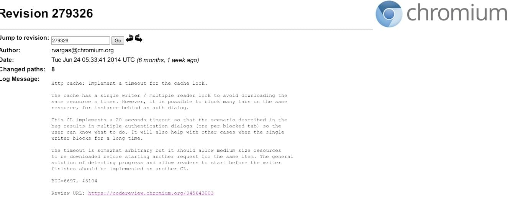</p>
<p>于是好奇为什么会拖了这么久，遂跟了一下该问题下面的回复看看发生了什么。简直惊呆了。</p>
<ul>
<li><p>同月14号，有了首次对这个问题的回复，那是将该问题指派给了<a href="mailto:rvargas@chromium.org" target="_blank" rel="external">rvargas</a>同学。</p>
</li>
<li><p>一个月过去了，也就是7月15号，<a href="mailto:rvargas@chromium.org" target="_blank" rel="external">rvargas</a>同学指出了与该问题关联的另外一个issue「<a href="https://code.google.com/p/chromium/issues/detail?id=6697" target="_blank" rel="external">issue 6697</a>」</p>
</li>
<li><p>接下来是8月5日，<a href="mailto:rvargas@chromium.org" target="_blank" rel="external">rvargas</a>同学为该问题贴上了标签<code>-Mstone-7 Mstone-8</code>，表明将会在里程碑7或者8里面进行修复。但在后面的10月7日，这个日程又被推到了<code>-Mstone-8 Mstone-9</code>。</p>
</li>
<li><p>再接下来11月5日，有人表示以目前的速度及bug数量，还没有时间来修复它，重点在处理优先级为<code>p1</code>的问题上。于是此问题又成功被顺延了，来到<code>-mstone-9 Mstone-10</code>，同时优级降为<code>p2</code>。Chromium人手也不够啊，看来。</p>
</li>
<li><p>时间来到12月9日，因为优先级为<code>p2</code>的issue如果没有被标为开始状态的话又自动推到下一个里程碑了，于是顺利来到 <code>-Mstone-10 MovedFrom-10 Mstone-11</code>。次年2月来到<code>-Mstone-11 Mstone-12</code>。完成了一次跨年！</p>
</li>
</ul>
<p>…………</p>
<ul>
<li><p>上面省略N步。如此反复，最后一次被推到了<code>-Mstone-16</code>，那是在2011年10月12日。</p>
</li>
<li><p>时间一晃来到2013年，这一年很平静，前面的几个月都没有人对此问题进行回复。直到11月27日，有人看不下去了，评论道：</p>
</li>
</ul>
<blockquote>
<p>This bug has been pushed to the next mstone forever…and is blocking more bugs (e.g <a href="https://code.google.com/p/chromium/issues/detail?id=31014)and" target="_blank" rel="external">https://code.google.com/p/chromium/issues/detail?id=31014)and</a> use-cases same video in 2 tags on one page, and adaptive bit rate html5 video streaming whenever that will kick in. Any chance this will be prioritized?</p>
</blockquote>
<p>由于这个bug的无限后延也阻塞了另外一些同类问题，看来是时候解决了。这不，最初的owner 当天就进行了回复：</p>
<blockquote>
<p>ecently there was someone looking at giving it another try… I’d have to see if there was any progress there.</p>
<p>If not, I may try to fix it in Q1.</p>
</blockquote>
<p>最后一句亮瞎。敢情这之前owner就没有想过要去真正解决似的，因为有其他人在看这个问题了，所以就没管了，如果Q1还没人解决的话，我会出手的！嗯，就是这个意思。</p>
<p>…………</p>
<p>最后，也就是上文提到的，2014年6月，还是<a href="mailto:rvargas@chromium.org" target="_blank" rel="external">rvargas</a>同学对这个问题进行了修复，实现了对缓存读取20秒超时的控制。</p>
<p>该问题就是这样从2010来到2014的。我怀疑Chrome是如何成为版本帝的。</p>
<h3 id="u9636_u6BB5_u603B_u7ED3"><a href="#u9636_u6BB5_u603B_u7ED3" class="headerlink" title="阶段总结"></a>阶段总结</h3><p>仅有的希望到此似乎都没有了。不过前面的努力也不是没有作何收获，至少我得到了以下有价值的信息：</p>
<ul>
<li>谷歌的神坛光环不再那么耀眼，他们的产品也是有Bug的</li>
<li>Chrome 处理issue的效率，当然不排除这种大型项目bug数量跟人力完全不匹配的情况</li>
<li>受上面Stackoverflow问题的启发，接下来我将重点转移到了针对出问题请求的日志分析上，并且取得了突破</li>
</ul>
<h2 id="u5F00_u59CB_u65B0_u7684_u5F81_u7A0B"><a href="#u5F00_u59CB_u65B0_u7684_u5F81_u7A0B" class="headerlink" title="开始新的征程"></a>开始新的征程</h2><p>虽然上面的努力没能定位到问题，但作为这次对解决这次问题的尝试，还是将它记录了下来，估且称作「旧的回忆」吧。</p>
<p>下面开始「新的征程」。</p>
<p></p>
<h2 id="u518D_u6B21_u91CD_u73B0"><a href="#u518D_u6B21_u91CD_u73B0" class="headerlink" title="再次重现"></a>再次重现</h2><p>这次受到上面的启发，开启<code>chrome://net-internals/#events</code>页面来捕获事件日志。看是否有错误或异常发生。</p>
<p>再次经过旷日持久的机械操作，重现了！这次，日志在手，天下我有。感觉Bug不会存活多久了。</p>
<p>Chrome Dev Tools 网络面板截图：<br>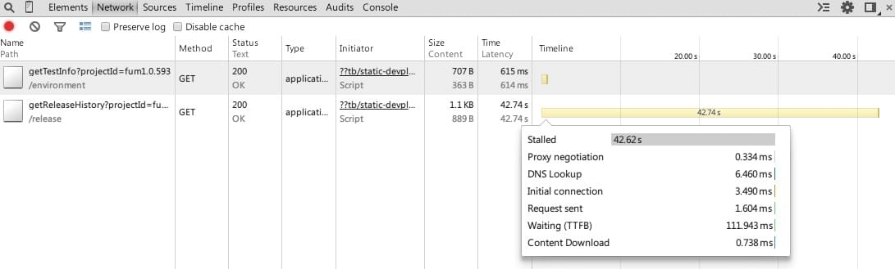</p>
<p>由上面的截图看到，本次出问题的请求总耗时42.74秒。</p>
<p>问题请求的时间线信息截图：<br>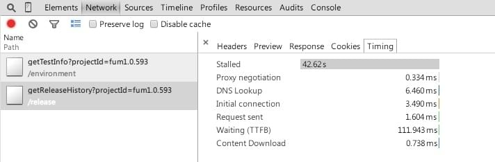</p>
<p>可以预见，通过捕获的日志完全可以看到<code>Stalled</code>那么久都发生了些什么鬼。</p>
<p>话不多说，切换到事件捕获页面，定位到出问题的请求，查看其详情。同时将该日志导出，永久保存！作为纪念，也方便以后再次导入查看。有兴趣的同学可以访问下方下载后进行导入，就可以清晰地查看到现场了，就好像你亲历了整个犯罪现场一样。</p>
<h3 id="u65E5_u5FD7_u8FD8_u539F"><a href="#u65E5_u5FD7_u8FD8_u539F" class="headerlink" title="日志还原"></a>日志还原</h3><ul>
<li><p><a href="https://gist.githubusercontent.com/wayou/39772215d075c80d643a/raw/9c91463f22016d20c90de19e77ae3e4f302e0769/gistfile1.txt" target="_blank" rel="external">下载该日志文件</a></p>
</li>
<li><p>在Chrome新开一个标签输入<code>chrome://net-internals/#events</code></p>
</li>
<li>切换到<code>Import</code>，选择刚才下载的JSON文件进行导入</li>
<li>切换到<code>Events</code>，定位到<code>http://qa.tieba.baidu.com/release/getReleaseHistory?projectId=fum1.0.593</code> 这个请求</li>
</ul>
<p>此刻右边出现的便是该问题请求的详细日志。</p>
<h3 id="u65E5_u5FD7_u89E3_u8BFB"><a href="#u65E5_u5FD7_u89E3_u8BFB" class="headerlink" title="日志解读"></a>日志解读</h3><p>下面不妨把日志文件贴出来先：</p>
<figure class="highlight"><table><tr><td class="gutter"><pre><span class="line">1</span><br></pre></td><td class="code"><pre><span class="line">193486: URL_REQUEST&#10;http://qa.tieba.baidu.com/release/getReleaseHistory?projectId=fum1.0.593&#10;Start Time: 2015-01-02 17:51:05.323&#10;&#10;t=    1 [st=    0] +REQUEST_ALIVE  [dt=42741]&#10;t=    1 [st=    0]    URL_REQUEST_DELEGATE  [dt=0]&#10;t=    1 [st=    0]   +URL_REQUEST_START_JOB  [dt=42740]&#10;                      --&#62; load_flags = 339804160 (BYPASS_DATA_REDUCTION_PROXY | MAYBE_USER_GESTURE | REPORT_RAW_HEADERS | VERIFY_EV_CERT)&#10;                      --&#62; method = &#34;GET&#34;&#10;                      --&#62; priority = &#34;LOW&#34;&#10;                      --&#62; url = &#34;http://qa.tieba.baidu.com/release/getReleaseHistory?projectId=fum1.0.593&#34;&#10;t=    2 [st=    1]      URL_REQUEST_DELEGATE  [dt=0]&#10;t=    2 [st=    1]      HTTP_CACHE_GET_BACKEND  [dt=0]&#10;t=    2 [st=    1]      HTTP_CACHE_OPEN_ENTRY  [dt=0]&#10;t=    2 [st=    1]      HTTP_CACHE_ADD_TO_ENTRY  [dt=0]&#10;t=    2 [st=    1]      HTTP_CACHE_READ_INFO  [dt=0]&#10;t=    2 [st=    1]      URL_REQUEST_DELEGATE  [dt=0]&#10;t=    2 [st=    1]     +HTTP_STREAM_REQUEST  [dt=2]&#10;t=    4 [st=    3]        HTTP_STREAM_REQUEST_BOUND_TO_JOB&#10;                          --&#62; source_dependency = 193488 (HTTP_STREAM_JOB)&#10;t=    4 [st=    3]     -HTTP_STREAM_REQUEST&#10;t=    4 [st=    3]     +HTTP_TRANSACTION_SEND_REQUEST  [dt=0]&#10;t=    4 [st=    3]        HTTP_TRANSACTION_SEND_REQUEST_HEADERS&#10;                          --&#62; GET /release/getReleaseHistory?projectId=fum1.0.593 HTTP/1.1&#10;                              Host: qa.tieba.baidu.com&#10;                              Connection: keep-alive&#10;                              Accept: application/json, text/plain, */*&#10;                              User-Agent: Mozilla/5.0 (Windows NT 6.1; WOW64) AppleWebKit/537.36 (KHTML, like Gecko) Chrome/39.0.2171.95 Safari/537.36&#10;                              Referer: http://qa.tieba.baidu.com/project/&#10;                              Accept-Encoding: gzip, deflate, sdch&#10;                              Accept-Language: en-US,en;q=0.8&#10;                              Cookie: [268 bytes were stripped]&#10;t=    4 [st=    3]     -HTTP_TRANSACTION_SEND_REQUEST&#10;t=    4 [st=    3]     +HTTP_TRANSACTION_READ_HEADERS  [dt=21301]&#10;t=    4 [st=    3]        HTTP_STREAM_PARSER_READ_HEADERS  [dt=21301]&#10;                          --&#62; net_error = -101 (ERR_CONNECTION_RESET)&#10;t=21305 [st=21304]        HTTP_TRANSACTION_RESTART_AFTER_ERROR&#10;                          --&#62; net_error = -101 (ERR_CONNECTION_RESET)&#10;t=21305 [st=21304]     -HTTP_TRANSACTION_READ_HEADERS&#10;t=21305 [st=21304]     +HTTP_STREAM_REQUEST  [dt=3]&#10;t=21307 [st=21306]        HTTP_STREAM_REQUEST_BOUND_TO_JOB&#10;                          --&#62; source_dependency = 193494 (HTTP_STREAM_JOB)&#10;t=21308 [st=21307]     -HTTP_STREAM_REQUEST&#10;t=21308 [st=21307]     +HTTP_TRANSACTION_SEND_REQUEST  [dt=3]&#10;t=21308 [st=21307]        HTTP_TRANSACTION_SEND_REQUEST_HEADERS&#10;                          --&#62; GET /release/getReleaseHistory?projectId=fum1.0.593 HTTP/1.1&#10;                              Host: qa.tieba.baidu.com&#10;                              Connection: keep-alive&#10;                              Accept: application/json, text/plain, */*&#10;                              User-Agent: Mozilla/5.0 (Windows NT 6.1; WOW64) AppleWebKit/537.36 (KHTML, like Gecko) Chrome/39.0.2171.95 Safari/537.36&#10;                              Referer: http://qa.tieba.baidu.com/project/&#10;                              Accept-Encoding: gzip, deflate, sdch&#10;                              Accept-Language: en-US,en;q=0.8&#10;                              Cookie: [268 bytes were stripped]&#10;t=21311 [st=21310]     -HTTP_TRANSACTION_SEND_REQUEST&#10;t=21311 [st=21310]     +HTTP_TRANSACTION_READ_HEADERS  [dt=21304]&#10;t=21311 [st=21310]        HTTP_STREAM_PARSER_READ_HEADERS  [dt=21304]&#10;                          --&#62; net_error = -101 (ERR_CONNECTION_RESET)&#10;t=42615 [st=42614]        HTTP_TRANSACTION_RESTART_AFTER_ERROR&#10;                          --&#62; net_error = -101 (ERR_CONNECTION_RESET)&#10;t=42615 [st=42614]     -HTTP_TRANSACTION_READ_HEADERS&#10;t=42615 [st=42614]     +HTTP_STREAM_REQUEST  [dt=12]&#10;t=42627 [st=42626]        HTTP_STREAM_REQUEST_BOUND_TO_JOB&#10;                          --&#62; source_dependency = 193498 (HTTP_STREAM_JOB)&#10;t=42627 [st=42626]     -HTTP_STREAM_REQUEST&#10;t=42627 [st=42626]     +HTTP_TRANSACTION_SEND_REQUEST  [dt=2]&#10;t=42627 [st=42626]        HTTP_TRANSACTION_SEND_REQUEST_HEADERS&#10;                          --&#62; GET /release/getReleaseHistory?projectId=fum1.0.593 HTTP/1.1&#10;                              Host: qa.tieba.baidu.com&#10;                              Connection: keep-alive&#10;                              Accept: application/json, text/plain, */*&#10;                              User-Agent: Mozilla/5.0 (Windows NT 6.1; WOW64) AppleWebKit/537.36 (KHTML, like Gecko) Chrome/39.0.2171.95 Safari/537.36&#10;                              Referer: http://qa.tieba.baidu.com/project/&#10;                              Accept-Encoding: gzip, deflate, sdch&#10;                              Accept-Language: en-US,en;q=0.8&#10;                              Cookie: [268 bytes were stripped]&#10;t=42629 [st=42628]     -HTTP_TRANSACTION_SEND_REQUEST&#10;t=42629 [st=42628]     +HTTP_TRANSACTION_READ_HEADERS  [dt=112]&#10;t=42629 [st=42628]        HTTP_STREAM_PARSER_READ_HEADERS  [dt=112]&#10;t=42741 [st=42740]        HTTP_TRANSACTION_READ_RESPONSE_HEADERS&#10;                          --&#62; HTTP/1.1 200 OK&#10;                              Date: Fri, 02 Jan 2015 09:51:48 GMT&#10;                              Content-Type: application/json; charset=UTF-8&#10;                              Transfer-Encoding: chunked&#10;                              Connection: keep-alive&#10;                              Cache-Control: no-cache&#10;                              tracecode: 31079600320335034634010217&#10;                              tracecode: 31079600320537995786010217&#10;                              Server: Apache&#10;t=42741 [st=42740]     -HTTP_TRANSACTION_READ_HEADERS&#10;t=42741 [st=42740]      HTTP_CACHE_WRITE_INFO  [dt=0]&#10;t=42741 [st=42740]      HTTP_CACHE_WRITE_DATA  [dt=0]&#10;t=42741 [st=42740]      HTTP_CACHE_WRITE_INFO  [dt=0]&#10;t=42741 [st=42740]      URL_REQUEST_DELEGATE  [dt=0]&#10;t=42741 [st=42740]   -URL_REQUEST_START_JOB&#10;t=42741 [st=42740]    URL_REQUEST_DELEGATE  [dt=0]&#10;t=42741 [st=42740]    HTTP_TRANSACTION_READ_BODY  [dt=0]&#10;t=42741 [st=42740]    HTTP_CACHE_WRITE_DATA  [dt=0]&#10;t=42741 [st=42740]    HTTP_TRANSACTION_READ_BODY  [dt=0]&#10;t=42741 [st=42740]    HTTP_CACHE_WRITE_DATA  [dt=0]&#10;t=42742 [st=42741] -REQUEST_ALIVE</span><br></pre></td></tr></table></figure>
<p>首先，日志显示的总耗时与上面网络面板截图的总耗时是吻合的，都是42.74秒，说明我们定位正确。</p>
<blockquote>
<p>以下时间均以毫秒计</p>
</blockquote>
<p>日志第一列为时间线，自请求发起时算。<br>第二列为每步操作所逝去的时间，时间差的概念，与第三列里面的<code>dt</code>不同，它会积累前面的耗时。<br>第三列为具体的事件，以及相应事件的耗时<code>dt</code>，此耗时为绝对耗时。</p>
<p><code>+</code>号对应事件开始，<code>-</code>号对应事件结束，也就是说他们必然成对出现。住里是展开后更加详细的子事件。直到不能再细分。</p>
<p>如果说一开始接触到这个日志时手足无措的话，我们来看一下正常情况下的日志是怎样的，有对比才有发现。</p>
<p>以下随便摘取一次正常请求的日志，如下：</p>
<figure class="highlight"><table><tr><td class="gutter"><pre><span class="line">1</span><br></pre></td><td class="code"><pre><span class="line">384462: URL_REQUEST&#10;http://qa.tieba.baidu.com/release/getReleaseHistory?projectId=fum1.0.593&#10;Start Time: 2015-01-03 20:23:54.698&#10;&#10;t=1556 [st=  0] +REQUEST_ALIVE  [dt=172]&#10;t=1556 [st=  0]    URL_REQUEST_DELEGATE  [dt=0]&#10;t=1556 [st=  0]   +URL_REQUEST_START_JOB  [dt=171]&#10;                   --&#62; load_flags = 335609856 (BYPASS_DATA_REDUCTION_PROXY | MAYBE_USER_GESTURE | VERIFY_EV_CERT)&#10;                   --&#62; method = &#34;GET&#34;&#10;                   --&#62; priority = &#34;LOW&#34;&#10;                   --&#62; url = &#34;http://qa.tieba.baidu.com/release/getReleaseHistory?projectId=fum1.0.593&#34;&#10;t=1557 [st=  1]     +URL_REQUEST_DELEGATE  [dt=4]&#10;t=1557 [st=  1]        DELEGATE_INFO  [dt=4]&#10;                       --&#62; delegate_info = &#34;extension Tampermonkey&#34;&#10;t=1561 [st=  5]     -URL_REQUEST_DELEGATE&#10;t=1561 [st=  5]      HTTP_CACHE_GET_BACKEND  [dt=0]&#10;t=1561 [st=  5]      HTTP_CACHE_OPEN_ENTRY  [dt=1]&#10;                     --&#62; net_error = -2 (ERR_FAILED)&#10;t=1562 [st=  6]      HTTP_CACHE_CREATE_ENTRY  [dt=0]&#10;t=1562 [st=  6]      HTTP_CACHE_ADD_TO_ENTRY  [dt=0]&#10;t=1562 [st=  6]      URL_REQUEST_DELEGATE  [dt=0]&#10;t=1562 [st=  6]     +HTTP_STREAM_REQUEST  [dt=2]&#10;t=1564 [st=  8]        HTTP_STREAM_REQUEST_BOUND_TO_JOB&#10;                       --&#62; source_dependency = 384467 (HTTP_STREAM_JOB)&#10;t=1564 [st=  8]     -HTTP_STREAM_REQUEST&#10;t=1564 [st=  8]     +HTTP_TRANSACTION_SEND_REQUEST  [dt=1]&#10;t=1564 [st=  8]        HTTP_TRANSACTION_SEND_REQUEST_HEADERS&#10;                       --&#62; GET /release/getReleaseHistory?projectId=fum1.0.593 HTTP/1.1&#10;                           Host: qa.tieba.baidu.com&#10;                           Connection: keep-alive&#10;                           Accept: application/json, text/plain, */*&#10;                           User-Agent: Mozilla/5.0 (Windows NT 6.1; WOW64) AppleWebKit/537.36 (KHTML, like Gecko) Chrome/39.0.2171.95 Safari/537.36&#10;                           Referer: http://qa.tieba.baidu.com/project/&#10;                           Accept-Encoding: gzip, deflate, sdch&#10;                           Accept-Language: en-US,en;q=0.8&#10;                           Cookie: [2642 bytes were stripped]&#10;t=1565 [st=  9]     -HTTP_TRANSACTION_SEND_REQUEST&#10;t=1565 [st=  9]     +HTTP_TRANSACTION_READ_HEADERS  [dt=161]&#10;t=1565 [st=  9]        HTTP_STREAM_PARSER_READ_HEADERS  [dt=160]&#10;t=1725 [st=169]        HTTP_TRANSACTION_READ_RESPONSE_HEADERS&#10;                       --&#62; HTTP/1.1 200 OK&#10;                           Date: Sat, 03 Jan 2015 12:23:54 GMT&#10;                           Content-Type: application/json; charset=UTF-8&#10;                           Transfer-Encoding: chunked&#10;                           Connection: keep-alive&#10;                           Cache-Control: no-cache&#10;                           tracecode: 14346880480340800522010320&#10;                           tracecode: 14346880480253893130010320&#10;                           Server: Apache&#10;t=1726 [st=170]     -HTTP_TRANSACTION_READ_HEADERS&#10;t=1726 [st=170]      HTTP_CACHE_WRITE_INFO  [dt=0]&#10;t=1726 [st=170]      HTTP_CACHE_WRITE_DATA  [dt=0]&#10;t=1726 [st=170]      HTTP_CACHE_WRITE_INFO  [dt=0]&#10;t=1726 [st=170]     +URL_REQUEST_DELEGATE  [dt=1]&#10;t=1726 [st=170]        DELEGATE_INFO  [dt=1]&#10;                       --&#62; delegate_info = &#34;extension Tampermonkey&#34;&#10;t=1727 [st=171]     -URL_REQUEST_DELEGATE&#10;t=1727 [st=171]   -URL_REQUEST_START_JOB&#10;t=1727 [st=171]    URL_REQUEST_DELEGATE  [dt=0]&#10;t=1727 [st=171]    HTTP_TRANSACTION_READ_BODY  [dt=0]&#10;t=1727 [st=171]    HTTP_CACHE_WRITE_DATA  [dt=1]&#10;t=1728 [st=172]    HTTP_TRANSACTION_READ_BODY  [dt=0]&#10;t=1728 [st=172]    HTTP_CACHE_WRITE_DATA  [dt=0]&#10;t=1728 [st=172] -REQUEST_ALIVE</span><br></pre></td></tr></table></figure>
<p>针对上面正常的请求，我们主要关注两部分，如下面的截图：</p>
<ul>
<li>发送请求头 <code>+HTTP_TRANSACTION_SEND_REQUEST  [dt=1]</code></li>
<li>读取响应头 <code>+HTTP_TRANSACTION_READ_HEADERS  [dt=161]</code></li>
</ul>
<p>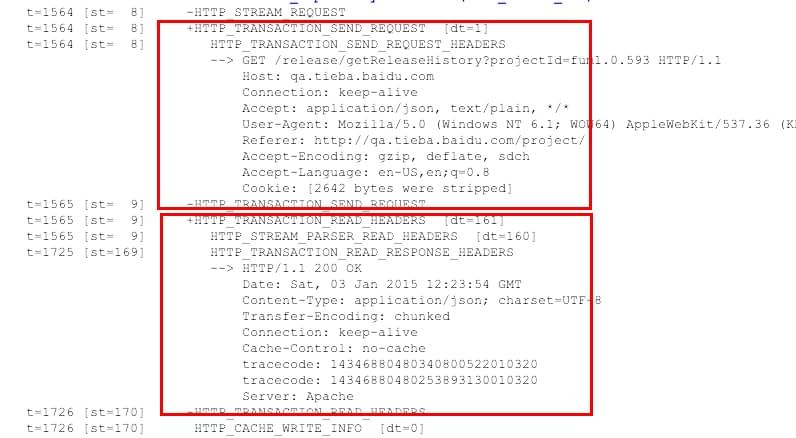</p>
<p>这是正常的情况下，没有什么问题。并且日志里可以清晰地看到发送的请求头是什么，然后解析出来的响应头是什么。这跟在网络面板看到的是一致的。</p>
<p>再回到出问题的请求日志上来，同样我们只关注这两部分。如下面的截图：</p>
<p>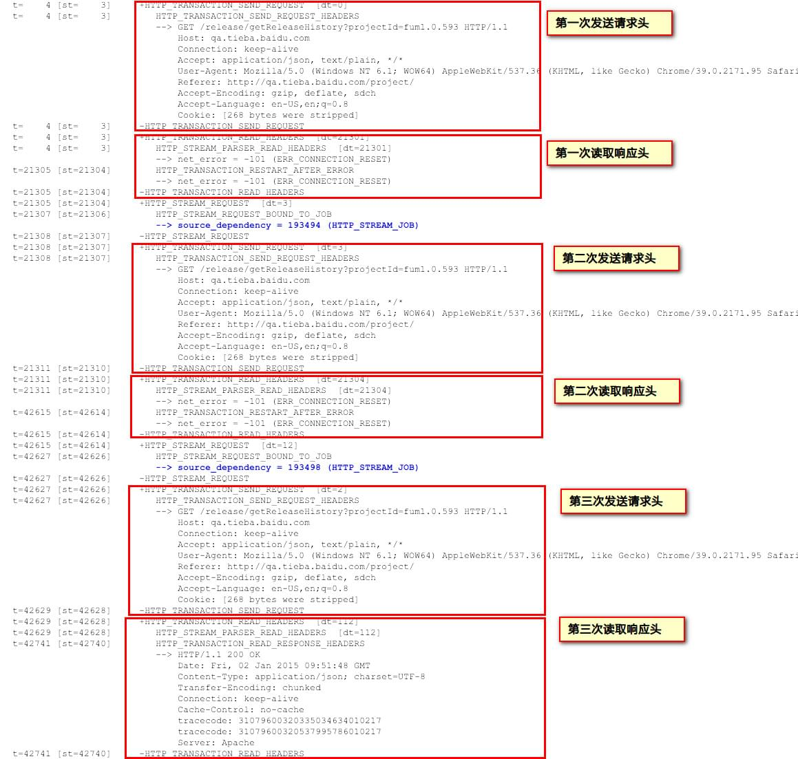</p>
<p>与正常相比，最后一次发送请求和读取响应头无异常，时间就多在了前面还有再次发送和请求的过程，细看时间都花在了以下两个事件中：</p>
<ul>
<li><code>HTTP_STREAM_PARSER_READ_HEADERS  [dt=21301]</code></li>
<li><code>HTTP_STREAM_PARSER_READ_HEADERS  [dt=21304]</code></li>
</ul>
<p>该事件的名称已经自我解读，意思是解析读取的响应头。但问题是紧接着下面报错了，</p>
<figure class="highlight"><table><tr><td class="gutter"><pre><span class="line">1</span><br></pre></td><td class="code"><pre><span class="line">--&#62; net_error = -101 (ERR_CONNECTION_RESET)</span><br></pre></td></tr></table></figure>
<p>读取响应头时发生了链接重置的错误，有理由认为本次链接是不成功的，没拿到正确的响应头，于是解析不成功。时间都花在了这里，足足21秒之久，两个21秒造就了上面看到的<code>Stalled</code>了42秒之久。</p>
<p>问题似乎已经很明朗了。链接被重置。</p>
<p>在第三次尝试的时候正常了，于是正确返回，我们才看到了被解析的响应头被展示在了下面。也就是说在出问题的时候要么响应头未拿到，要么响应头非法导致解析不成功。而原因就是链接被重置。</p>
<p>那么接下来的工作就是对<code>ERR_CONNECTION_RESET</code>这个错误的追查了。</p>
<h2 id="u5B98_u65B9_u5173_u4E8E_ERR_CONNECTION_RESET__u9519_u8BEF_u7684_u89E3_u91CA"><a href="#u5B98_u65B9_u5173_u4E8E_ERR_CONNECTION_RESET__u9519_u8BEF_u7684_u89E3_u91CA" class="headerlink" title="官方关于 ERR_CONNECTION_RESET 错误的解释"></a>官方关于 <code>ERR_CONNECTION_RESET</code> 错误的解释</h2><p>未找到官方相应的资料，Chrome官网上唯一<a href="https://support.google.com/chrome/answer/117804?hl=en" target="_blank" rel="external">关于此错误的描述</a>是在安装Chrome时出现Error 101。我估计文档的撰写人员没想到谁会这么蛋疼想要看这些生涩的东西，除了开发者。既然你都是开发者了，那为什么不去看Chromium的源码。</p>
<p>好吧，唯一的途径似乎只能从源码中寻找了。作为只精JS的前端人员，现在要从C，C++代码中找答案了。估计追完这个问题，我会尝试为Chromium贡献代码。</p>
<p>慢着，在这之前，还是搜到一些关于这个错误的信息的。但似乎都不怎么靠谱。</p>
<p>比如<a href="http://blog.agmon.com/2013/07/05/solving-error-101-neterr_connection_reset-the-connection-was-reset/" target="_blank" rel="external">这里</a>提到，是因为ISP网络问题，实在无太可能。还有<a href="http://www.tomshardware.com/answers/id-1982982/err-connection-reset-error-chrome.html" target="_blank" rel="external">这是神马</a>居然一个硬件网站但提到了这个错误，并且怀疑是杀软导致Chrome出问题，但杀软已经在上文被我们排除了。</p>
<h2 id="Chromium__u6E90_u7801"><a href="#Chromium__u6E90_u7801" class="headerlink" title="Chromium 源码"></a>Chromium 源码</h2><p>那么这个错误究竟是什么。能不能找到点靠谱的解释。当然能，让我们进入到Chromium的源码中去。</p>
<h3 id="ERR_CONNECTION_RESET_u88AB_u5524_u8D77_u7684_u5730_u65B9"><a href="#ERR_CONNECTION_RESET_u88AB_u5524_u8D77_u7684_u5730_u65B9" class="headerlink" title="ERR_CONNECTION_RESET被唤起的地方"></a>ERR_CONNECTION_RESET被唤起的地方</h3><p>在Chromium的源码中搜索该常量名，确实出现很多<a href="https://code.google.com/p/chromium/codesearch#search/&amp;q=ERR_CONNECTION_RESET&amp;sq=package:chromium&amp;type=cs" target="_blank" rel="external">结果</a>。联系到我们查看日志发现问题的上下文，是在解析响应头报的。所以我们定位到<code>http_stream_parser.cc</code>文件，同时注意到有一个文件叫<code>net_errors_win.cc</code>，所以猜测他是定义所有错误常量用的，也顺便打开之。</p>
<p>经过观察<code>src/net/base/net_errors_win.cc</code> 其路径和代码得知其中多为系统级别的错误，似乎跟我们的问题不是很关联，忽略该文件。</p>
<p>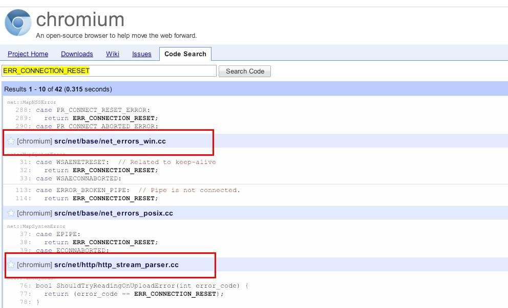</p>
<p><code>http_stream_parser.cc</code>文件中，<code>ERR_CONNECTION_RESET</code>仅出现一次。这给我们定位带来了极大的便利。</p>
<figure class="highlight cpp"><figcaption><span>[chromium]//src/net/base/net_errors_win.cc</span><a href="https://code.google.com/p/chromium/codesearch#chromium/src/net/http/http_stream_parser.cc&q=ERR_CONNECTION_RESET&sq=package:chromium&dr=C" target="_blank" rel="external">http_stream_parser.cc</a></figcaption><table><tr><td class="gutter"><pre><span class="line">1</span><br><span class="line">2</span><br><span class="line">3</span><br><span class="line">4</span><br><span class="line">5</span><br><span class="line">6</span><br></pre></td><td class="code"><pre><span class="line"><span class="comment">// Returns true if |error_code| is an error for which we give the server a</span></span><br><span class="line"><span class="comment">// chance to send a body containing error information, if the error was received</span></span><br><span class="line"><span class="comment">// while trying to upload a request body.</span></span><br><span class="line"><span class="function"><span class="keyword">bool</span> <span class="title">ShouldTryReadingOnUploadError</span><span class="params">(<span class="keyword">int</span> error_code)</span> </span>&#123;</span><br><span class="line">  <span class="keyword">return</span> (error_code == ERR_CONNECTION_RESET);</span><br><span class="line">&#125;</span><br></pre></td></tr></table></figure>
<p>这里定义了一个<code>ShouldTryReadingOnUploadError</code> 的方法，注释耐人寻味，这个时候，这样的情景，能否正确解读注释成为了比读懂代码更重要（这是我在看JS代码时永远无法体味到的感觉），下面尽可能对它进行理解：</p>
<blockquote>
<p>在尝试发送一个请求体的时候，让服务器尝试发送一个带错误的响应体，如果我们接收到了该错误则返回<code>true</code></p>
</blockquote>
<p>我承认被上面的复杂从句打败！</p>
<p>那么我们来看这个方法被调用的场景。</p>
<p>现在我们点击上面的<code>ShouldTryReadingOnUploadError</code>方法，代码下方出现调用了该方法的地方，一共有两处。</p>
<p>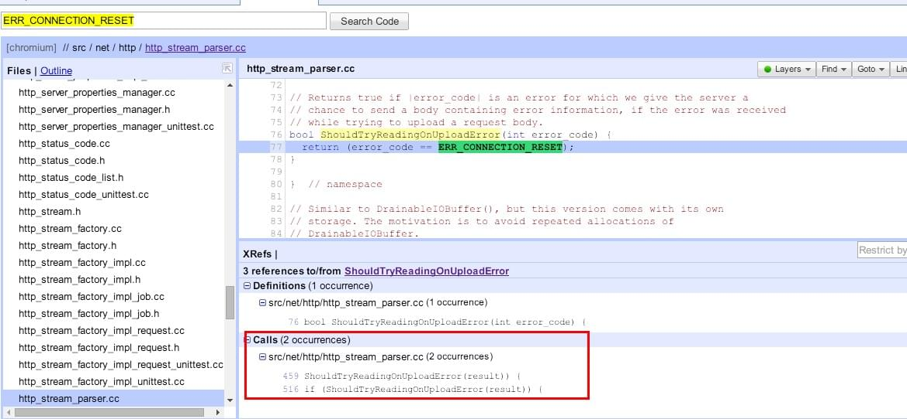</p>
<p>分别点击进行查看。</p>
<figure class="highlight"><figcaption><span>459行DoSendHeadersComplete方法里进行了调用</span></figcaption><table><tr><td class="gutter"><pre><span class="line">1</span><br><span class="line">2</span><br><span class="line">3</span><br><span class="line">4</span><br><span class="line">5</span><br><span class="line">6</span><br><span class="line">7</span><br><span class="line">8</span><br><span class="line">9</span><br><span class="line">10</span><br><span class="line">11</span><br><span class="line">12</span><br><span class="line">13</span><br></pre></td><td class="code"><pre><span class="line">int HttpStreamParser::DoSendHeadersComplete(int result) &#123;</span><br><span class="line">  if (result &lt; 0) &#123;</span><br><span class="line">    // In the unlikely case that the headers and body were merged, all the</span><br><span class="line">    // the headers were sent, but not all of the body way, and |result| is</span><br><span class="line">    // an error that this should try reading after, stash the error for now and</span><br><span class="line">    // act like the request was successfully sent.</span><br><span class="line">    if (request_headers_-&gt;BytesConsumed() &gt;= request_headers_length_ &amp;&amp;</span><br><span class="line">        ShouldTryReadingOnUploadError(result)) &#123;</span><br><span class="line">      upload_error_ = result;</span><br><span class="line">      return OK;</span><br><span class="line">    &#125;</span><br><span class="line">    return result;</span><br><span class="line">  &#125;</span><br></pre></td></tr></table></figure>
<blockquote>
<p>虽然不太可能，但也不排除头部和请求体合并的情况，当所有头部发送完毕，请求体不一定，此时<code>result</code>便是需要稍后处理的一种错误，这里暂且先返回<code>OK</code>。</p>
</blockquote>
<figure class="highlight cpp"><figcaption><span>516行另一个DoSendBodyComplete方法里进行了调用</span></figcaption><table><tr><td class="gutter"><pre><span class="line">1</span><br><span class="line">2</span><br><span class="line">3</span><br><span class="line">4</span><br><span class="line">5</span><br><span class="line">6</span><br><span class="line">7</span><br><span class="line">8</span><br><span class="line">9</span><br><span class="line">10</span><br></pre></td><td class="code"><pre><span class="line"><span class="keyword">int</span> HttpStreamParser::DoSendBodyComplete(<span class="keyword">int</span> result) &#123;</span><br><span class="line">  <span class="keyword">if</span> (result &lt; <span class="number">0</span>) &#123;</span><br><span class="line">    <span class="comment">// If |result| is an error that this should try reading after, stash the</span></span><br><span class="line">    <span class="comment">// error for now and act like the request was successfully sent.</span></span><br><span class="line">    <span class="keyword">if</span> (ShouldTryReadingOnUploadError(result)) &#123;</span><br><span class="line">      upload_error_ = result;</span><br><span class="line">      <span class="keyword">return</span> OK;</span><br><span class="line">    &#125;</span><br><span class="line">    <span class="keyword">return</span> result;</span><br><span class="line">  &#125;</span><br></pre></td></tr></table></figure>
<blockquote>
<p>跟上面类似，如果<code>result</code>出错，稍后处理，先返回正常</p>
</blockquote>
<p>这也与我们在日志中看到的情况相符，在前面再次错误后，这次请求并没有终止结束，而是尝试到了第三次并且以成功结束的。</p>
<p>但不管怎样，从这两个方法，一个<code>DoSendHeadersComplete</code>， 另一个<code>DoSendBodyComplete</code>，身上能体现出请求确实已经发出去。</p>
<h3 id="TCP_RST"><a href="#TCP_RST" class="headerlink" title="TCP RST"></a>TCP RST</h3><p>另外，在<a href="https://code.google.com/p/chromium/codesearch#chromium/src/net/base/net_error_list.h" target="_blank" rel="external"><code>net_error_list.h</code></a>这个文件的109行，可以准确找到我们在日志中得到的101号错误。它的定义如下：</p>
<figure class="highlight cpp"><table><tr><td class="gutter"><pre><span class="line">1</span><br><span class="line">2</span><br></pre></td><td class="code"><pre><span class="line"><span class="comment">// A connection was reset (corresponding to a TCP RST).</span></span><br><span class="line">NET_ERROR(CONNECTION_RESET, -<span class="number">101</span>)</span><br></pre></td></tr></table></figure>
<p>从括号中的进一步解释可以知道，它代表TCP连接重置。</p>
<h2 id="TCP"><a href="#TCP" class="headerlink" title="TCP"></a>TCP</h2><p>那么问题来了，什么是TCP连接重置？什么会引发TCP连接重置。从<a href="http://blogs.technet.com/b/networking/archive/2009/08/12/where-do-resets-come-from-no-the-stork-does-not-bring-them.aspx" target="_blank" rel="external">这篇文章</a>中有比较详细的解答。</p>
<p>想要完全解释，本文似乎是不可能的了。但根据上面的文章，这里可以简单转述一下。</p>
<h3 id="u4EC0_u4E48_u662FTCP_u8FDE_u63A5"><a href="#u4EC0_u4E48_u662FTCP_u8FDE_u63A5" class="headerlink" title="什么是TCP连接"></a>什么是TCP连接</h3><p>它是一种协议。当网络上一个节点想与另一个节点通信时，双方需要选建立连接。而这个连接过程需要大家都懂的一种约定，TCP就是事先定好的一种约定，于是我们采用它吧，于是其中一个节点按照这个约定发起一建立连接的请求，另一节点收到后，根据该约定，便能读懂这个请求里各字段的意思：哦，丫这是想约我呢。</p>
<h3 id="u4E09_u6B21_u63E1_u624B"><a href="#u4E09_u6B21_u63E1_u624B" class="headerlink" title="三次握手"></a>三次握手</h3><p>继续上面的例子。A想与B通信，并且使用TCP。</p>
<p>首先A发起一个报文，其中包含自己的地址，想要连接的目标地址，自己用来连接的端口及目标机器的端口,etc.</p>
<p>B收到邀约，并且愿意付约。此刻B需要回传一个报文，告诉A我愿意跟你连接。</p>
<p>A收到B的肯定应答，到此A与B经历了三次通信或者说是握手，双方都没有异议，连接建立。</p>
<p>而连接断开的过程也颇为类似。双方中的一方比如说A先发起一个断开连接的报文FIN，B收到并确认，然后回传一个可以断开的报文FIN给A。此刻A收到并确认。此刻双方都确认后，连接可以安全断开，但还会保持一个等待断开的状态，大概持续4分钟，用于之前连接通路上未传输完成的数据进行善后。</p>
<h3 id="u4EC0_u4E48_u662F_u91CD_u7F6E"><a href="#u4EC0_u4E48_u662F_u91CD_u7F6E" class="headerlink" title="什么是重置"></a>什么是重置</h3><p>上面提到了4分钟的等待时间，而重置RESET便是立即断开连接的手段。</p>
<h3 id="u53D1_u751F_u91CD_u7F6E_u7684_u60C5_u51B5"><a href="#u53D1_u751F_u91CD_u7F6E_u7684_u60C5_u51B5" class="headerlink" title="发生重置的情况"></a>发生重置的情况</h3><p>到此重置的作用已然明了。也就是说，重置甚至算不上一个错误，它是TCP连接中的一种正常情况。但什么时候会发生重置，如何引起的。</p>
<p>上文列出了三种情况。</p>
<h4 id="SMB_Reset"><a href="#SMB_Reset" class="headerlink" title="SMB Reset"></a>SMB Reset</h4><p>简单举例来说，服务器提供了两个端口445，139进行服务，客户端同时去请求与这两个端口连接，服务器返回了两个端口可以被连接，此刻客户端择优选择一个进行连接，而重置另一个。</p>
<h3 id="Ack_2C_Reset"><a href="#Ack_2C_Reset" class="headerlink" title="Ack, Reset"></a>Ack, Reset</h3><p>报文重置发生主要有以下情况：</p>
<ul>
<li>服务器没有监听被请求的端口，无法建立连接</li>
<li>服务器此刻无法比如没有充裕的资源用来连接连接</li>
</ul>
<h4 id="TCP_Reset_due_to_no_response"><a href="#TCP_Reset_due_to_no_response" class="headerlink" title="TCP Reset due to no response"></a>TCP Reset due to no response</h4><p>由于没有响应而被重置。当发起连接的一方连续发送6次请求未得到回应，此刻默认他们之间已经通过三次握手建立了连接并且通信有问题，发起的一方将连接重置。</p>
<h4 id="Application_Reset"><a href="#Application_Reset" class="headerlink" title="Application Reset"></a>Application Reset</h4><p>除了上面的情况，找不到TCP内部自己发送的重置，则归为了这一类。程序内将连接重置。此种情况包含了所有你想得到想不到将连接断开的情况。有可能是程序内部逻辑重置的，所以不能完全认为此时发生了错误。</p>
<p>值得注意的是，上面列出的情况<strong>服务器的不确定性导致连接重置</strong>的可能性要合理些。Chrome 主动发起URL请求不太可能自己又重置掉，并且没有理由重置掉后又去重连。</p>
<h2 id="u8FDB_u4E00_u6B65_u89E3_u8BFB_u65E5_u5FD7_u6587_u4EF6"><a href="#u8FDB_u4E00_u6B65_u89E3_u8BFB_u65E5_u5FD7_u6587_u4EF6" class="headerlink" title="进一步解读日志文件"></a>进一步解读日志文件</h2><p>上面Chromium源码部分的求证多少带有猜测成分。不妥。</p>
<p>因为没找到关于Chrome net-internal 日志的官方文档什么的，自身去解读始终是有局限的。不如提个ISSUE让Chromium开发人员来搭一把手吧。遂向Chromium提交ISSUE，请<a href="https://code.google.com/p/chromium/issues/detail?id=447463" target="_blank" rel="external">戳此查看</a>，虽然我不认为现在遇到的这个问题跟Chrome有关并且属于Chrome的Bug，目的仅仅是看他们能否帮忙给出合理的日志解读来定位问题。</p>
<p>三天后（有点热泪盈眶），有同学<a href="https://code.google.com/p/chromium/issues/detail?id=447463#c1" target="_blank" rel="external">回复</a>，将日志所体现的问题诊断得似乎很有道理，可信。</p>
<blockquote>
<p>1)  We have a bunch of connections to qa.tieba.baidu.com, all were used successfully, and are now idle.<br>2)  They all silently die for some reason, without us ever being informed.  My guess is your personal router times out the connection, but this could also be your ISP, the destination server, or ever a real network outage (A short one) that prevents us from getting the connection closed message.<br>3)  There’s a new request to qa.tieba.baidu.com.  We try to reuse a socket.  After 21 seconds, we get the server’s RST message (“I don’t have a connection to you.”).  Since it was a stale socket, we’re aware this sometimes happens, so we just retry…And get the next idle socket in the list, which, after 21 seconds, gives us the same reset message.  We try again, for the same reason.  This time we don’t have another stale socket to try, so we use a fresh one.  The request succeeds.</p>
<p>The real problem here is something is taking 21 seconds to send us the RST messages, despite the fact that a roundtrip to the server you’re talking to only takes about 100 milliseconds.</p>
</blockquote>
<ul>
<li><p>「之前有过很多成功的连接」，确实，因为出现加载缓慢的情况是偶发的，这之前有过很多正常的不卡的请求存在过。这里没有异议。</p>
</li>
<li><p>「他们都以未知的原因被断掉了」，因为不是正常地断开连接，所以客户端也就是浏览器不知道当前与服务器的TCP连接已经断开，傻傻地保留着与服务器连接的socket，注意，此时已经发生信息的不对等了，这是问题的根源。至于什么原因，给出了可能的原因：路由器认为连接超时将其断掉，同时不排除ISP（互联网服务提供商）的原因，服务器暂时的停运抽风等。不管怎样，客户端浏览器没有收到连接断开的信息。</p>
</li>
<li><p>在上面的基础上，我们去发起一次新的请求。此时浏览器希望重用之前的连接以节省资源，用之前的一个socket去发起连接。21秒后收到服务器返回的重置信息（意思是服务器告诉浏览器：我和你之间没有连接），没关系，上面提到，我们有很多可以重用的连接，于是浏览器重新从可用的连接里面又选择了一个去进行连接，不幸的是，同样的情况再次发生，21秒后收到服务器的重置信息。这体现在日志上就是第二次重试失败。到第三次，因为前面浏览器认为可以重用的连接现在都被正确地标为断开了，没有新的可用，于是这次浏览器发起了全新的请求，成功了！</p>
</li>
</ul>
<p>总结出来，两个问题：</p>
<ul>
<li>为什么之前成功的连接不正常的断开了？服务器配置或者网络原因？</li>
<li>是什么让浏览器21秒后才收到重置信息？服务器作出反应过慢还是网络原因？</li>
</ul>
<h2 id="Chrome_Dev_Tool__u4E2D_u65F6_u95F4_u7EBF_u5404_u9636_u6BB5_u4EE3_u8868_u7684_u610F_u4E49"><a href="#Chrome_Dev_Tool__u4E2D_u65F6_u95F4_u7EBF_u5404_u9636_u6BB5_u4EE3_u8868_u7684_u610F_u4E49" class="headerlink" title="Chrome Dev Tool 中时间线各阶段代表的意义"></a>Chrome Dev Tool 中时间线各阶段代表的意义</h2><p>另附注一下Chrome Dev Tool 中请求的时间线各阶段代表的意义。<br>以下内容扒自<a href="https://developer.chrome.com/devtools/docs/network#resource-network-timing" target="_blank" rel="external">Chrome 开发者文档页</a>，然后我将它本地化了一下下。</p>
<p></p>
<h3 id="Stalled/Blocking"><a href="#Stalled/Blocking" class="headerlink" title="Stalled/Blocking"></a>Stalled/Blocking</h3><p>在请求能够被发出去前的等等时间。包含了用于处理代理的时间。另外，如果有已经建立好的连接，那么这个时间还包括等待已建立连接被复用的时间，这个遵循Chrome对同一源最大6个TCP连接的规则。</p>
<p>「拿我们的情况来说，上面出错所有的耗时也是算在了这部分里面。网络面板中显示的其余时间比如DNS查找，连接建立等都是属于最后那次成功请求的了」</p>
<h3 id="Proxy_Negotiation"><a href="#Proxy_Negotiation" class="headerlink" title="Proxy Negotiation"></a>Proxy Negotiation</h3><p>处理代理的时间。</p>
<h3 id="DNS_Lookup"><a href="#DNS_Lookup" class="headerlink" title="DNS Lookup"></a>DNS Lookup</h3><p>查找DNS的时间。页面上每个新的域都需要一次完整的寻路来完成DNS查找。</p>
<h3 id="Initial_Connection_/_Connecting"><a href="#Initial_Connection_/_Connecting" class="headerlink" title="Initial Connection / Connecting"></a>Initial Connection / Connecting</h3><p>用于建立链接的时间，包括TCP握手及多次尝试握手，还有处理SSL。</p>
<h3 id="SSL"><a href="#SSL" class="headerlink" title="SSL"></a>SSL</h3><p>完成SSL握手的时间。</p>
<h3 id="Request_Sent_/_Sending"><a href="#Request_Sent_/_Sending" class="headerlink" title="Request Sent / Sending"></a>Request Sent / Sending</h3><p>Time spent issuing the network request. Typically a fraction of a millisecond.</p>
<p>发起请求的时间，通常小到可以忽略。</p>
<h3 id="Waiting__28TTFB_29"><a href="#Waiting__28TTFB_29" class="headerlink" title="Waiting (TTFB)"></a>Waiting (TTFB)</h3><p>等待响应的时间，具体来说是等待返回首个字节的时间。包含了与服务器之间一个来回响应的时间和等待首个字节被返回的时间。</p>
<h3 id="Content_Download_/_Downloading"><a href="#Content_Download_/_Downloading" class="headerlink" title="Content Download / Downloading"></a>Content Download / Downloading</h3><p>用于下载响应的时间</p>
<h2 id="u7ED3_u8BBA"><a href="#u7ED3_u8BBA" class="headerlink" title="结论"></a>结论</h2><p>我相信很多同学是直接跳到这里来了的。事实上我给不出什么解决方案，但能排除前端代码引起问题的可能性。</p>
<p>具体来说，能够得到的结论有以下几点：</p>
<ul>
<li>请求成功构造，排除前端代码层面导致问题的原因，是不是浏览器Bug有待确定</li>
<li>可以肯定的是在与服务器建立连接时被Shut down了，参考上面关于连接重置的部分会更有意义一些</li>
</ul>
<blockquote>
<p>01/13日更新：参见上面进一步解读日志文件部分。</p>
</blockquote>
<h2 id="u53C2_u8003_u53CA_u5F15_u7528"><a href="#u53C2_u8003_u53CA_u5F15_u7528" class="headerlink" title="参考及引用"></a>参考及引用</h2><p>#1 <a href="http://stackoverflow.com/questions/27513994/chrome-stalls-when-making-multiple-requests-to-same-resource" target="_blank" rel="external">Chrome stalls when making multiple requests to same resource?</a><br>#2 <a href="http://stackoverflow.com/questions/5585918/what-does-pending-mean-for-request-in-chrome-developer-window" target="_blank" rel="external">What does “pending” mean for request in Chrome Developer Window?</a><br>#3 <a href="https://developer.chrome.com/devtools/docs/network#resource-network-timing" target="_blank" rel="external">Evaluating network performance / Resource network timing</a><br>#4 <a href="https://www.google.com/search?q=Provisional+headers+are+shown&amp;gws_rd=ssl" target="_blank" rel="external">Provisional headers are shown</a><br>#5 <a href="http://stackoverflow.com/questions/21177387/caution-provisional-headers-are-shown-in-chrome-debugger" target="_blank" rel="external">“CAUTION: provisional headers are shown” in Chrome debugger</a><br>#6 <a href="http://segmentfault.com/q/1010000000364871" target="_blank" rel="external">Chrome 里的请求报错 “CAUTION: Provisional headers are shown” 是什么意思?</a><br>#7 <a href="https://codereview.chromium.org/345643003" target="_blank" rel="external">Issue 345643003: Http cache: Implement a timeout for the cache lock</a><br>#8 <a href="https://code.google.com/p/chromium/issues/detail?id=46104" target="_blank" rel="external">Issue 46104:   Pages can get blocked in “Waiting for Cache” for a very long time</a><br>#9 <a href="http://dev.chromium.org/for-testers/providing-network-details" target="_blank" rel="external">Providing Network Details for bug reports</a><br>#10 <a href="http://div.io/topic/609?page=1#2050" target="_blank" rel="external">从FE的角度上再看输入url后都发生了什么</a><br>#11 <a href="https://code.google.com/p/chromium/codesearch#chromium/src/net/http/http_stream_parser.cc&amp;q=ERR_CONNECTION_RESET&amp;sq=package:chromium&amp;dr=C&amp;l=77" target="_blank" rel="external">ERR_CONNECTION_RESET 的Chromium 源码</a><br>#12 <a href="http://www.chromium.org/developers/design-documents/network-stack#TOC-HttpStreamFactory" target="_blank" rel="external">Chromium Network Stack</a><br>#13 <a href="http://blogs.technet.com/b/networking/archive/2009/08/12/where-do-resets-come-from-no-the-stork-does-not-bring-them.aspx" target="_blank" rel="external">Where do resets come from? (No, the stork does not bring them.)</a><br>#14 <a href="https://code.google.com/p/chromium/issues/detail?id=447463#c1" target="_blank" rel="external">Issue 447463: Chrome-network: Long delay before RST message on stale sockets results in slow page loads)</a></p>
			  <!-- about -->
			  
		</div>

		<!-- pagination -->
	  

		<div class="comment-section">
  
  
   <!-- 多说评论框 start -->
    <div class="ds-thread" data-thread-key="_posts/2014-12-31-chrome-request-stalled-problem.md" data-title="关于请求被挂起页面加载缓慢问题的追查（01/13更）" data-url="http://wayou.github.io/2014/12/31/chrome-request-stalled-problem/"></div>
    <!-- 多说评论框 end -->
   <!-- 多说公共JS代码 start (一个网页只需插入一次) -->
    <script type="text/javascript">
    var duoshuoQuery = {short_name:'wayouliu'};
      (function() {
        var ds = document.createElement('script');
        ds.type = 'text/javascript';ds.async = true;
        ds.src = (document.location.protocol == 'https:' ? 'https:' : 'http:') + '//static.duoshuo.com/embed.js';
        ds.charset = 'UTF-8';
        (document.getElementsByTagName('head')[0] 
         || document.getElementsByTagName('body')[0]).appendChild(ds);
      })();
      </script>
    <!-- 多说公共JS代码 end -->
  


</div>
	</div>
	<div class="col-md-3">
		
			<div id="toc"></div>
		
	</div>

</div>
		<footer>
			<p>
  由 <a href="https://hexo.io">hexo</a> 强力驱动 | 搭载 <a href="https://github.com/wayou/hexo-theme-material">material</a> 主题
</p>
<p>
  &copy; 2015 <a href="http://wayou.github.io"> Wayou Liu </a>
</p>
<a id="gotop" href="#" title="back to top"><i class="mdi-hardware-keyboard-arrow-up"></i></a>
		</footer>
	  </div>

		<!-- <script src="/libs/bs/js/bootstrap.min.js"></script> -->
		<script src="//apps.bdimg.com/libs/bootstrap/3.3.4/js/bootstrap.min.js"></script>
		<script>(typeof $().modal == 'function')|| document.write('<script src="/libs/bs/js/bootstrap.min.js" type="text/javascript"><\/script>')</script>

		<!-- material design -->
		<!-- <script src="/libs/bs-material/js/ripples.min.js"></script> -->
		<script src="//apps.bdimg.com/libs/bootstrap-material/0.3.0/js/ripples.min.js"></script>
		<!-- <script src="/libs/bs-material/js/material.min.js"></script> -->
		<script src="//apps.bdimg.com/libs/bootstrap-material/0.3.0/js/material.min.js"></script>
		<!-- toc -->
		<!-- <script src="/libs/tocify/jquery-ui.min.js"></script> -->
		<script src="//apps.bdimg.com/libs/jqueryui/1.10.4/jquery-ui.min.js"></script>
		<script src="/libs/tocify/jquery.tocify.custom.js"></script>

		<script src="/js/main.js"></script>

	</body>
